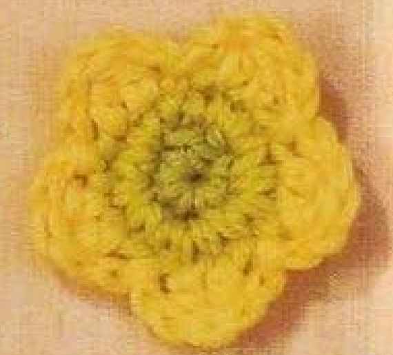
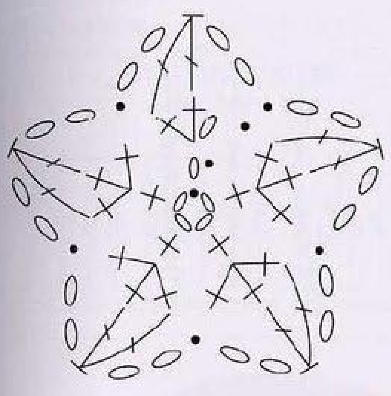
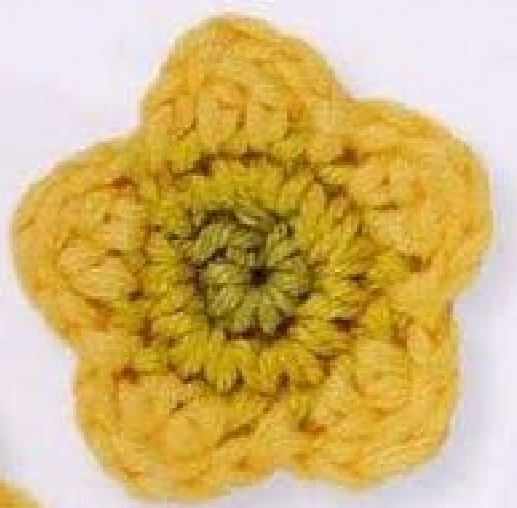
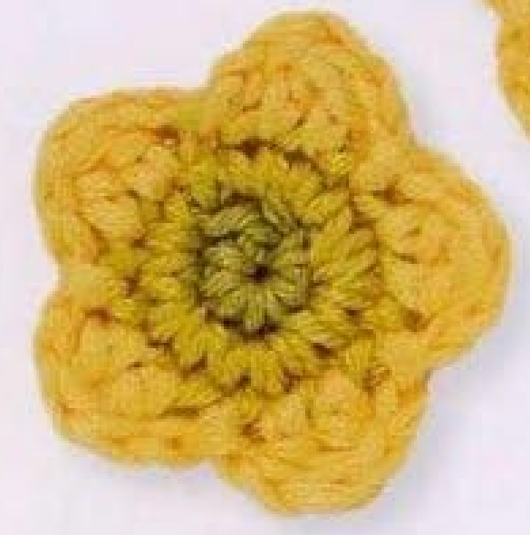

This crochet buttercup flower pattern makes a small, five-petal appliqué with a green center, a lime middle ring, and yellow petals. Three joined rounds build the flower from the inside out. The design is pattern 42, Buttercup, in Lesley Stanfield’s 100 Flowers to Knit & Crochet. This guide explains that design in US crochet terms and adds counting, color-change, and finishing notes to help you follow its compact instructions.

CROCHET BUTTERCUP FLOWER PATTERN
Project: One five-petal cotton flower with a green center, lime ring, and yellow petals. The following pattern card keeps the source’s three-round construction and color arrangement, with stitches written in US terminology. The book does not specify finished dimensions, yardage, hook size, or a fixed gauge for this entry.
| Skill level | Suitable for a confident beginner comfortable with increases, joined rounds, and color changes; this is guidance for the techniques used. |
|---|---|
| Base size | One flower. Finished diameter depends on yarn, hook, and tension; no measured size is provided in the source entry. |
| Yarn | 4-ply cotton: green (A), lime (B), and yellow (C). Use yarns of comparable thickness. |
| Quantity | Small amounts of each color. Exact yardage is not supplied; allow enough extra yarn to weave in every color-change tail securely. |
| Hook | Choose a hook suited to your cotton that produces neat, flexible stitches. No hook size is specified in the pattern entry. |
| Gauge | No fixed gauge is supplied. Make and measure one motif when the attachment space requires a particular size. |
| Notions | Scissors, yarn needle, and an optional removable stitch marker. |
| US abbreviations | ch: chain; sl st: slip stitch; sc: single crochet; dc: double crochet; st/sts: stitch/stitches. UK dc becomes US sc; UK tr becomes US dc. |
Pattern Instructions — US Terms
Foundation: With green A, ch 4 and join with a sl st in the first chain to make a ring.
Round 1: Ch 1, counting it as one stitch position; work 4 sc into the ring. Join to the beginning ch 1 with a sl st, changing to lime B in the join. 5 positions.
Round 2: With B, ch 1, counting it as one position; work 2 sc into the beginning chain below, then 3 sc into each of the next 4 sc. Join to the beginning ch 1 with a sl st, changing to yellow C in the join. 15 positions: the beginning chain plus 14 sc.
Round 3: With C, repeat [ch 2, 2 dc into each of the next 2 stitches, ch 2, sl st into the next stitch] 5 times. On the last repeat, close at the previous round’s joining point. 5 petals, with 4 dc in each petal.
Finish: Fasten off, secure the ending discreetly, and weave in the tails on the back. Gently arrange the five petals. Detailed stitch placement and troubleshooting notes follow below.
A Small Flower with Five Rounded Petals
The buttercup’s outline comes from five repeated groups around a circular base. Each petal uses two short chains to rise from and return to the middle ring, with four double crochet stitches between them. A slip stitch anchors the valley after each petal. These short, rounded petals give the flower its buttercup shape; they are different from the longer petals in the hellebore design.
Look at the source photographs before starting. The green center is compact, the lime ring separates it from the yellow, and the five petals sit close together. Cotton gives the stitches a defined appearance. Your result will depend on yarn thickness, hook size, and tension, so use the pictures to check the overall structure rather than expecting an exact measured match.
Materials and Yarn Colors
- Color A: green 4-ply cotton for the first round and foundation ring.
- Color B: lime 4-ply cotton for the second round.
- Color C: yellow 4-ply cotton for the five petals.
- A crochet hook that gives your cotton neat, flexible stitches.
- Scissors, a yarn needle, and an optional removable stitch marker.
The book specifies the yarn type and three colors for this design. The pattern entry does not give a hook size, finished diameter, gauge, or yardage. Choose a hook suited to your particular 4-ply cotton and make a small trial if size matters. The label “4-ply” here describes the yarn used in the source; yarn naming can vary between suppliers, so compare thickness as well as the label.
You need only small amounts of each color, making this a useful project for cotton leftovers. Leave tails long enough to thread into a needle and secure through several stitches. Keep the three yarn ends separate as you work, especially the two green shades. Choosing clearly different green and lime colors makes it easier to see where the first round finishes and the second begins.
For an appliqué, aim for fabric that holds the flower’s outline without feeling rigid. If stitches are difficult to enter, try a slightly larger hook. If the center and ring are loose and the petals collapse, try a smaller one. These are practical adjustment suggestions rather than extra requirements from the book. Record the hook you use if you plan to make a matching set.
US Crochet Terms and the Source Chart
The source uses UK crochet terms. All written instructions in this article use US terms. UK double crochet is US single crochet, and UK treble crochet is US double crochet. A UK slip stitch is the same slip stitch used here. The chain stitch does not change between the two naming systems.
| Source term | Use in this guide |
|---|---|
| dc (UK) | sc — single crochet (US) |
| tr (UK) | dc — double crochet (US) |
| ss | sl st — slip stitch |
| ch | chain |
Other abbreviations used below are st for stitch, sts for stitches, and RS for right side. Square brackets group a sequence that repeats. “Next two stitches” means two different stitches in order. It does not mean placing every stitch of the petal into a single base stitch.
The chart shows the foundation ring in the center, the small stitches of the inner rounds, and five groups of taller stitches around the edge. Oval symbols represent chains, small solid dots indicate slip stitches, crosses represent the short UK double crochet stitches, and the taller symbols represent UK trebles. Read those taller stitches as US double crochet when following this guide.

The Two Counts to Check Before Making Petals
This pattern includes the beginning chain in each of the first two round totals. That convention matters because many other patterns tell you to ignore a starting chain one. Here, follow the counts given for this particular flower. Round 1 has five positions: the beginning chain one and four single crochet stitches. Round 2 has fifteen positions: its beginning chain one plus fourteen single crochet stitches.
A useful way to check round 2 is to write the arithmetic before crocheting: one beginning chain, two single crochets in the chain below, and three single crochets in each of four remaining stitches. That is 1 + 2 + (3 × 4) = 15. The fifteen positions divide into five groups of three, which is exactly what the petal round needs.
Put a removable marker into the beginning chain if you find it difficult to see later. The joining slip stitch closes the round; it is not an extra sixteenth position. Counting it as a separate stitch can leave an unexpected gap after the last petal. Count the base carefully before you change to yellow, when the stitches are still easy to inspect.
Foundation Ring in Green
With color A, make four chains. Insert your hook into the first chain and work a slip stitch to form a ring. Keep the chain loop untwisted. Leave the center open enough to insert the hook several times, while avoiding a very loose foundation that will pull into an oversized hole.
The next round goes into the middle of this ring, not into four separate foundation chains. Hold the ring between your fingers as you make the first stitches. If it rotates, pause and reposition it so the working side stays visible. This foundation follows the book’s chain-ring method; a magic ring is not needed for the instructions given here.
Round 1: Build the Green Center
- With the right side facing, chain one. Count this chain as the first stitch position.
- Work four US single crochet stitches into the foundation ring.
- Join to the beginning chain one with a slip stitch, completing that join with color B, lime.
Round 1 checkpoint: five stitch positions. The beginning chain plus four single crochets form the center. Do not add a fifth single crochet after the chain. That would create six positions and change the structure needed for the next round. The color change is made at the join so the next round begins in lime.
To change color during the joining slip stitch, insert the hook into the beginning chain with the old color loop still on the hook. Draw the lime yarn through the joining point and through the loop on the hook. Gently adjust the green and lime tails so the join is secure. Avoid tightening it so much that the beginning chain becomes impossible to identify.
The center may look tiny at this stage. Spread the stitches around the ring to inspect them and find the beginning chain. You are checking the count and the join, not shaping a finished flower yet. Keep the tails behind the work so they do not get caught in the middle ring or become mistaken for stitches.
Round 2: Make the Lime Ring
- Continue with color B and chain one. This new chain counts as the first position of round 2.
- Work two US single crochet stitches into the beginning chain of round 1, directly below the new chain.
- Work three US single crochet stitches into each of the next four single crochet stitches.
- Join to the beginning chain one of round 2 with a slip stitch, completing the join with color C, yellow.
Round 2 checkpoint: fifteen stitch positions. There are fourteen actual single crochets plus the beginning chain. The first group contains the new chain and two single crochets; each of the other four groups contains three single crochets. This establishes five evenly spaced sections around the center.
Working two or three stitches into one base stitch is an increase. Insert the hook into the same base stitch again for each stitch belonging there, then move to the next base stitch only when that group is complete. If you spread the three stitches over three different base stitches, the round will not reach fifteen and there will not be enough room for five petals.
Before starting the yellow round, count all fifteen positions and identify the join. The beginning chain is one of those positions; the joining slip stitch is not an additional one. If you count fourteen, first check whether you omitted the beginning chain. If you count sixteen, check whether you included the join or added an extra stitch.
Round 3: Crochet the Five Yellow Petals
Continue with color C. Repeat the following petal sequence five times around the lime ring:
- Chain two to rise from the ring.
- Work two US double crochet stitches into the next base stitch.
- Work two US double crochet stitches into the following base stitch.
- Chain two to come back toward the ring.
- Slip stitch into the next base stitch to anchor the valley after the petal.
On the fifth repeat, the final slip stitch returns to the joining point of the previous round. Follow that closing point rather than treating the old joining slip stitch as a new extra base stitch. Fasten off after the last petal and finish the ending discreetly with the yarn needle.
Petal checkpoint: five petals, each with four US double crochet stitches. Every repeat uses two base positions for its double crochets and one for the anchoring slip stitch. Five repeats use the fifteen positions in the lime round. The chain-two sections form the sides of a petal; they do not consume additional base stitches.
For a US double crochet, yarn over, insert the hook into the indicated base stitch, yarn over and pull up a loop. Yarn over and pull through two loops, then yarn over and pull through the remaining two. Work that action twice into each of the two base stitches belonging to a petal. Keep the chains loose enough to form smooth sides without leaving large floppy loops.
After the first petal, look for a clear rounded lobe and a small valley where the slip stitch anchors it. Repeat the same sequence and tension for the next four petals. Count petals as you go, but also watch the base positions. If a sixth petal seems possible, stop and recount the lime ring and the stitches used by each repeat.

Finishing and Shaping the Buttercup
Thread the yellow tail into a needle and secure the ending through nearby stitches on the back. The source asks for an unobtrusive finish. Keep the finishing pass within the existing edge so it does not create a yellow bump or an apparent sixth petal. Weave each color tail into stitches of the corresponding color where practical.
Gently spread the five petals with your fingertips. Arrange the green center and lime ring into an even circle, then settle each yellow petal around it. You can lightly dampen the flower and let it dry flat if your yarn’s care instructions permit. Avoid hard pulling, which can enlarge the chain sides or make the center uneven.
For attaching the flower, decide whether you want a completely flat appliqué or a little lift at the petal tips. Sewing through the center and lime ring can leave the petals free. Sewing discreetly beneath the yellow edge holds more of the outline flat. Those attachment choices are optional uses for the finished motif, not extra crochet rounds.
Troubleshooting the Stitch Counts and Shape
Only four petals: check that the lime round has fifteen positions, including its beginning chain. Each petal needs exactly three base positions. A missed increase or a slip stitch made one position too far along can reduce the remaining space. Correct the base or repeat before forcing the last section to fit.
Six petals or a spare stitch: check for an extra single crochet in round 1, an extra increase in round 2, or a joining slip stitch counted as an ordinary stitch. This flower is built on five positions expanded to fifteen. Preserve those counts instead of adjusting the yellow round to hide an error.
Petals look narrow: make sure you placed two double crochets in each of two consecutive base stitches. The repeat contains four double crochets altogether. Two stitches total would make a different petal. Also confirm that you translated UK treble crochet to US double crochet, rather than accidentally using a shorter single crochet.
The edge looks wavy: check the stitch placement and counts first. A repeated extra double crochet can add fullness, and very loose chain-two sides can exaggerate it. If the counts are correct, gently shape the flower after finishing. A small handmade motif may have slight dimensional texture even when its structure matches the chart.
The green shades disappear: use colors with enough contrast to distinguish the center from the lime ring. The yellow petals will naturally dominate, but the ring should remain visible between them and the center. Photograph the flower in soft daylight to avoid strong yellow light that makes the three colors look alike.

Using the Finished Flower
This small buttercup can decorate a fabric pouch, a handmade card, a crochet bag, or a spring-themed textile project. Attach it with small, secure stitches appropriate to the base material. For a card, choose an attachment method suitable for paper and yarn, and let any adhesive dry fully before handling the finished piece.
For a group of flowers, use the same yarn thickness, hook, and tension throughout. Changing to thicker yarn makes a larger motif while preserving the stitch sequence, but it may also change the way the petals hold their shape. Work one sample with each yarn combination before making a full set, especially when the flowers must fit a specific space.
Questions About This Buttercup Pattern
Do the beginning chains count? Yes. The first two rounds use their beginning chain one in the stated totals of five and fifteen. Follow that convention here even if a different pattern tells you not to count chain one. The joining slip stitch does not add another position to either total.
Are there three or four rounds? There are three rounds after the foundation chain ring: green center, lime ring, and yellow petals. The foundation ring is not a separate stitch round. There is no additional border after the petals in this design.
Can I use one color? You can work the same construction in one color, but that is a variation. The source design uses green, lime, and yellow. Keep the same stitch counts and joins if you try a different palette, and use the original photographs to understand the intended three-color appearance.
Where do the pictures come from? The finished-flower photos and stitch chart accompanying this article are crops from the supplied book scan. They show completed motifs and the chart, not intermediate progress stages. The separate Pinterest pin is an AI-generated reference-based illustration of the finished flower.
What should I check before fastening off? Count five petals and confirm four US double crochets within each one. Check that the last slip stitch closes neatly at the earlier join. Then secure the tails, settle the petals, and compare the overall five-lobed outline with the source photographs.
Pattern Reference
Source: Lesley Stanfield, 100 Flowers to Knit & Crochet, pattern 42, Buttercup. The instructions and chart appear on printed page 67 (page 61 of the supplied PDF); the directory photograph is on printed page 38 (PDF page 33). The working instructions above preserve the source design while translating its UK stitch names into US terms. Hook selection, troubleshooting, and attachment notes are additional guidance rather than specifications printed in the pattern entry.